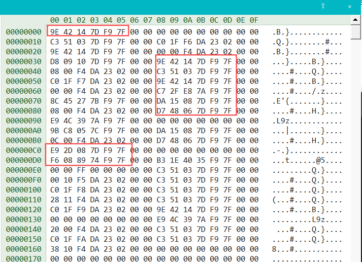
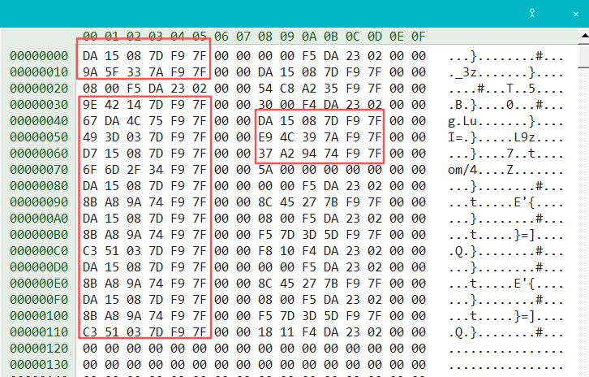
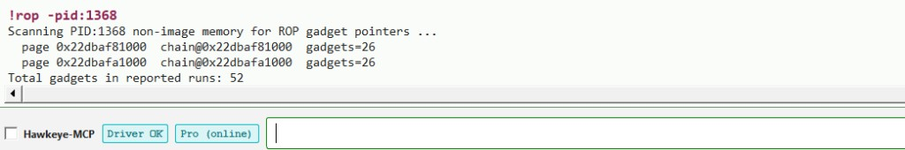

In this part we look at game anti-cheat: how to detect injection cheats built with ROP.
Earlier articles showed how strong ROP can be—it sidesteps conventional signature scanning. The flip side is the
hard weakness: gadgets stand out in memory.
Chain layout & gadgets (Figs. 1–3)

Fig. 1 · Main ROP chain stack layout

Fig. 2 · Sub-chain ROP stack layoutFig. 3 · One example gadget
Figs. 1–3 make the following easy to see:
Gadget shapes are obvious—often something like X; ret
ROP chains contain many gadgets
In this series’ demos, chains and gadgets live mainly on the heap
From an anti-cheat engineer’s perspective, detection can lean on those traits.
We first cover engineering on the detection side (performance, false positives), then walk through
common evasion ideas and whether they hold up: VAD tricks, page tables, kernel-hidden pages, in-chain padding, and more.
I · Performance & false positives
II–V · Common evasion
Extra · In-chain padding
VI · Lab closure
VII · Can you still hide and pass detection? (open discussion)
I. Performance & false positives
Performance matters too. In games, scans that eat too much time or too many resources are unacceptable;
teams usually mitigate with strategies such as deferred scans, once-per-match checks, and
batched scanning.
False positives: manageable. ROP cheats are still injection-class; even a chain with modest logic like our
series demos often has on the order of dozens of gadgets. Shapes are distinctive, so detectors can require
gadget counts plus constraints like chain confidence and spacing before reporting—filtering a lot of
accidental chain-like layouts and keeping false positives within practical bounds.
II. VAD spoofing: PAGE_NOACCESS—reliable bypass?
Answer:Hard to treat as a reliable bypass. Some mark chain regions in the VAD as
PAGE_NOACCESS, hoping anti-cheat that relies on VirtualQuery (ZwQueryVirtualMemory)
will see “not readable” and skip the region. The idea is sound, but mature detection is
multi-layered. When VAD labels disagree with real PTE state, that mismatch is already a high-risk signal.
Covering one lie with another is a bad trade.
Note: In samples our team has captured, a fair number of authors still try this approach.
III. Can VT-EPT protect the chain?
Answer: From what I’ve seen, no. EPT split views usually target
executable pages (read vs execute). Scanning ROP chains is fundamentally read-based, and chain pages
need not be executable—so EPT is a poor fit for hiding them. VT-style cheats more often fail because
strings and other static artifacts in the kernel heap were not cleaned up.
IV. Hand-built PTEs wired into the game process page tables?
Answer:Hard to treat as a reliable bypass. Capable anti-cheat does not stop at
ZwQueryVirtualMemory enumeration (a weak baseline). Walking the four-level page tables for the game process
is routine; if a page exists objectively but never shows up in VAD enumeration, that alone is suspicious. Not many cheat authors
bother with this—likely because the effort rarely pays off.
V. Kernel pages mapped for user-mode access to hide the chain?
Answer:Don’t expect stable evasion, but people try. Allocating kernel-backed pages that user mode
can reach to stash a chain sees only sporadic use; anti-cheat teams may not prioritize it until they have a sample—then a targeted
rule can ship in a hotfix. Same lesson: don’t cover one lie with another—“fancy” tricks can become
strong signatures, and the trap may already be set.
Extra: obfuscation & in-chain padding
Shellcode can insert junk or NOP-like bytes so byte signatures anti-cheat relied on stop matching—for a while.
ROP can pad the chain with dummy data or garbage addresses; at runtime,
RSP pivots (or equivalent stack-jump gadgets) skip those slots so the real chain still runs.
That is an endless arms race—detectors tighten gadget shape, chain confidence, spacing/density; evaders add
padding. There is no permanent “hide forever.”
Part 3’s draw-test dual ROP chains can be checked in Hawkeye Lab with !rop; see VI.
VI. Final closure
Hawkeye Lab supports detection of ROP-style injection cheats via the console command
!rop.

Fig. 4 · Matches Part 3 draw-test dual chains—26 gadgets per segmentVII. Any way left to hide and pass detection?
Answer: If you have other ideas, share them—GitHub Discussions on the Hawkeye repos or
Support—and help extend this picture.
Summary
ROP wins on evading classic signatures; it loses on recognizable gadgets and chains.
Detection surface: gadget shape and how chain-like the layout is.
Hawkeye builds products around Windows security;
Hawkeye Lab focuses on game security, refined through roughly
five years of real-world opposition.
As a professional detection and analysis tool, it shows anti-cheat engineers behavioral traits and
techniques cheats use; it shows cheat testers that shortcuts can backfire—Lab will
evaluate and score a sample so you can compare and improve.
Hawkeye Lab installs no system-wide hooks, does not trigger PG (PatchGuard), and
does not use VT; in a typical workflow, one automated detection run often finishes in
a few minutes (depending on sample and command mix).